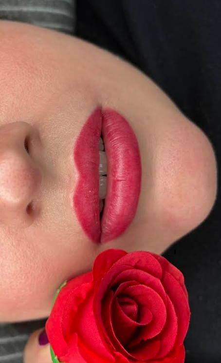

Dermopigmentazione
Labbra e sopracciglia, con un risultato studiato sul viso.
La dermopigmentazione permette di ridefinire in modo preciso alcune aree del viso. Prima del trattamento viene valutato insieme l’effetto desiderato, con particolare attenzione a forma, proporzioni e naturalezza.
Per chi cerca: maggiore definizione, simmetria e un aspetto curato anche senza make-up quotidiano.
Vedi disponibilità →